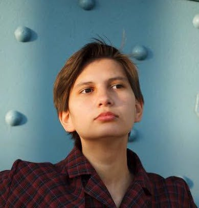

I’m an Urban Planner and Spatial Data Analyst who uses GIS, geospatial data validation, and spatial analysis to turn complex urban data into clear, evidence-based planning decisions.
I help infrastructure, mobility, and urban planning teams maintain reliable spatial datasets, validate geographic and network data, identify coverage and data-quality gaps, and translate complex geospatial information into practical planning outputs. My work focuses on the details that make urban data accurate and actionable, including land use, functional zoning, accessibility, public space, and infrastructure networks.
My background combines hands-on urban planning, international fieldwork, spatial analysis, and remote project coordination. I work effectively in distributed and hybrid teams, using structured documentation, data QA workflows, and asynchronous communication to maintain clarity, consistency, and progress across projects.
I collaborate across disciplines with local authorities, planners, technical and product teams, and community stakeholders. I’m particularly interested in connecting technical spatial analysis with planning priorities, operational requirements, and local perspectives.
I’m seeking opportunities at the intersection of urban planning, spatial data, infrastructure, mobility, and community-led development, including remote and internationally distributed projects.
Spatial analysis evaluating proximity to mapped green features, green-space provision per resident, and median household income across 992 IRIS neighbourhood units in Paris. Built with GIS spatial analysis, 500 m buffer calculations, and interactive geospatial data visualization.
The project focused on Gudiashvili Square's redevelopment, analyzing its social and economic dynamics. Our team identified conflicts between residential and commercial uses, disconnected from tourist routes despite its central location. We conducted a SWOT analysis and proposed digital tools, like apps, to enhance public engagement and resolve tensions from recent redevelopment. The project aimed to preserve the square's cultural heritage while promoting sustainable urban growth.
Our team developed a revitalization concept aiming to transform underused spaces into vibrant community areas. The project included detailed research on demographics, infrastructure, and local business development (using methods like pedestrian flow measurement and in-depth interviews). We proposed functional upgrades such as a recreation zone, a skate park, townhouses, and an IT club with VR technology to encourage social interaction and support local economic growth.
Created during an internship at the Ministry of Construction, Housing and Utilities, this project focuses on developing comprehensive master plans for small towns. The plans address key urban challenges such as outdated infrastructure, abandoned cultural heritage sites, and a lack of public spaces. The goal is to improve living conditions by renewing housing, creating new jobs, enhancing public transportation, and developing green spaces.